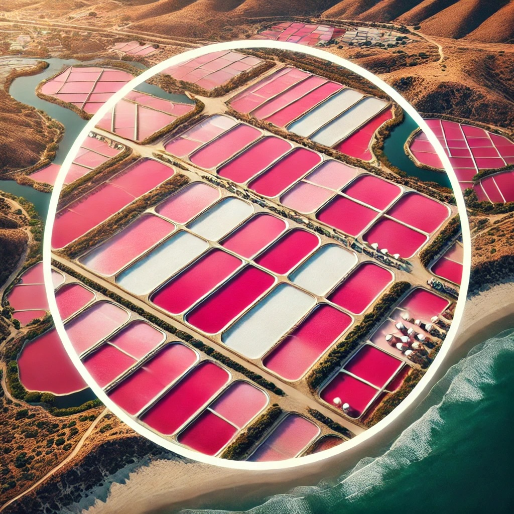

Welcome to The Pink Lake Café
Enjoy our delicious coffee and crepes in a cozy atmosphere inspired by nature.
About Us
The Pink Lake Café is located near the beautiful Alviso salt ponds, known for their stunning pink hues. We bring the charm of this natural wonder into our café experience.
Contact Us
Visit us at 1044 Catherine St, Alviso, CA.
Email: info@pinklakecafe.com | Phone: (555) 123-4567